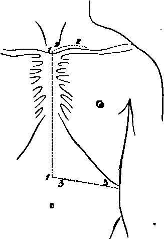

A Dissection Of The Internal Mammary Artery
Description
This section is from the book "A Manual Of Dissections Of The Human Body", by R. E. Carrington. Also available from Amazon: A manual of dissections of the human body.
A Dissection Of The Internal Mammary Artery
Position
The body lying supine.
I. Skin Incisions
1. From the centre of the supra-sternal notch to midway between the umbilicus and Ensifprm Cartilage.
No. 7.
2. A transverse one parallel with and half an inch above the upper border of the Sternum and Clavicle, to the junction of the inner with the middle third of the latter.
3. Another transversely from the lower border of No. 1 to the tip of the tenth rib. Reflect the flap outwards and expose the superficial scia containing—
1. The Platysma myoides muscle over the Clavicle.
2. The Supra-sternal and Supra-clavicular nerves passing over the Clavicle, and branches of the Supra-scapular artery with them.
3. The upper eight Anterior Cutaneous branches of the Intercostal nerves along the median line. The corresponding vessels from the Internal Mammary and Superior Epigastric trunks accompanying them.
4. A communication between the Supra-clavicular and second Anterior Cutaneous nerves. 5.1 The anterior branches of the third, fourth, fifth, and sixth Lateral Cutaneous nerves. 6. Small cutaneous vessels are found in the wall of the abdomen, derived from the anterior portions of the Intercostals.
II
Remove the Platysma muscle and the fascia lata, and expose—
1. The Sterno-mastoideus muscle, arising from the Manubrium Sterni and inner end of the Clavicle.
2. The Pectoralis major muscle, arising from the Clavicle and the true ribs from the first to the sixth inclusive. The interlaced aponeurosis of the muscles of opposite sides is also seen over the Sternum.
3. The aponeurosis of the Obliquus Externus muscle, and the fleshy fibres attached to the ninth and tenth ribs.
1 The second Lateral Cutaneous nerve usually wants the anterior branch (Ellis). It is, however, figured by Henle.
4. Anterior branches of the Internal Mammary artery ramifying over the Sternum.
III
a. Cut through the exposed attachment of the Sternomastoid muscle and turn it upwards.
b. Remove the fleshy portion of the Pectoralis major muscle within the limits of the skin incisions, preserving the Anterior Cutaneous arteries and nerves, and observing additional muscular branches of the Internal Mammary artery in the intercostal spaces from the second to the sixth inclusive.
c. Take away the anterior layer of the sheath of the Rectus muscle made up of the aponeuroses of the Obliquus Externus and Internus muscles, and further take away the aponeurosis and exposed fleshy portion of the Obliquus Externus muscle external to this.
d. Remove the upper part of the Rectus muscle, dissecting out the Superior Epigastric branch of the Internal Mammary artery which lies beneath it, with its vein. This artery is seen to enter the sheath of the muscle beneath the cartilage of the seventh rib. There will now be exposed—
1. The inner portion of the Clavicle, the side of the Sternum, and the Costal cartilages as far as the tenth.
2. The Sterno-hyoid and Sterno-thyroid muscles above the Manubrium and Clavicle.
3. The inner border of the Scalenus anticus muscle external to the preceding muscles.
4. The fascia over the Internal Intercostals, these muscles showing plainly through it; and the anterior portions of the External Intercostal muscles.
5. A portion of the Obliquus Internus muscle outside the sheath of the Rectus muscle.
6. The Anterior Jugular vein crossing transversely above the Clavicle.
The following structures between the Sterno-thyroid and Scalenus anticus muscles:—
7. A small portion of the first part of the Subclavian artery and the following branches. The Thyroid axis, the commencement of its Inferior Thyroid, and the Transverse Cervical and Supra-scapular offsets. The origin of the Internal Mammary branch is also seen.
8. The Phrenic nerve is seen on the Scalenus anticus muscle if the left artery is dissected; on the right side this nerve is too far out.
9. The Vagus nerve, the commencement of its Recurrent Laryngeal and Inferior Cardiac branches, are to be seen upon the Subclavian Artery, if the right side is dissected; on the left side this nerve is too deep. 10. The Ansæ Vieusenii are seen crossing the first part of the right Subclavian artery.
IV
a. Cut through the Sterno-hyoid muscle, and hook inwards the Sterno-thyroid muscle.
b. Saw through the Clavicle at the junction of the inner with the middle third, and disarticulate the inner end from the Sternum by dividing the anterior and posterior Sterno-clavicular and Interclavicular ligaments. The interarticular fibro-cartilage will be removed, the Rhomboid ligament, the inner end of the Costo-Coracoid membrane, and a small piece of the internal portion of the Snbclavins muscle cut through. Remove the upper and outer projecting angle of the Manubrium. c. Remove the fascia over the Internal Intercostal muscles, the anterior portions of the External and of the Internal Intercostal muscles. When this is done, the Internal Mammary artery will be seen in the intervals of the Costal cartilages about half an inch from the Sternum. It will be found to be giving off the Anterior Intercostal branches of the upper five or six spaces, two in each space, one running along the upper border of the rib, the other along the lower border of the rib above. These will be found to anastomose behind with the bifurcated Intercostal branches of the Aorta, similarly disposed as regards the rib. In the first or first two spaces, the Superior Intercostal artery will take the place of the Aortic Intercostal. In the lower spaces Anterior Intercostal arteries will be traced, but they will subsequently be found to arise from the Musculo-phrenic branch of the Internal Mammary artery, but this offset in its course outwards and downwards to the ninth cartilage is hidden by the approximation of the seventh, eighth, and ninth cartilages. The Internal Mammary artery will be seen to lie upon the pleura above and the Triangularis sterni muscle below. The Intercostal nerves will also be seen in the spaces crossing superficial to it. Veins corresponding to all the arteries mentioned are seen.
d. Having thus traced the artery between the cartilages, now remove the inner portions of the upper nine by cutting them through, externally in a line extending obliquely from the inner end of the divided Clavicle (one and a half inches from the Sternum) to the tip of the tenth rib; and internally, disarticulate them from the breast-bone dividing the following: Anterior and Posterior Costo-sternal, Capsular, Interarticular of second joint and of third when present, and Costo-xiphoid ligaments. The last is between the Ensiform and seventh cartilages. The synovial membranes will be of course destroyed.
e. Now raise this portion of the chest-wall from above downwards, dividing on its under surface (1) the slips of the Triangularis sterni muscle to the Ensiform, and second, third, fourth, fifth, sixth, and seventh cartilages; (2) the attachments of the Diaphragm and Transversalis muscle from the sixth to the ninth, and still lower (3) the insertion of the Obliquus Internus muscle into the ninth rib, that part attached to the seventh and eighth being already removed. The upper part of the last muscle should now be reflected downwards. This dissection should be done carefully, keeping the knife close to the inner surface of the chest-wall, to avoid a division of the artery. There will now be exposed, commencing from above—
1. The process of deep Cervical fascia beneath the Sternothyroid muscle, which should be cleared away.
If The Dissection Is Done On The Left Side
2. The Internal Jugular and Subclavian veins joining and forming the Innominate, only the beginning of which is exposed. The Vertebral and Internal Mammary veins will be seen joining the Innominate, and the Thoracic duct entering at the junction of the Jugular and Subclavian veins.
3. The lower part of the Common Carotid artery beneath the preceding trunks.
4. The first part of the Subclavian artery, the Thyroid axis, and the commencement of its branches, and the origin of the Internal Mammary branch.
5. The Phrenic nerve crossing the Internal Mammary artery.
Owing to the veins overlapping the arteries the Vagus nerve is not seen.
If The Dissection Is Made On The Right Side
2. The veins as on the left, but they are more external and separated from the artery by an angular interval. The right Lymphatic duct is seen instead of the Thoracic.
3. The bifurcation of the Innominate artery into Subclavian and Carotid branches.
4. The right Vagus nerve, its Recurrent and Inferior Cardiac branches.
5. The Ansae Vieusenii.
The Phrenic nerve lies too far out to be displayed on this side.
6. Lymphatic glands are seen at the root of the neck above the Manubrium.
In The Thoracic Region
7. The parietal Pleura is seen above, and the Triangularis sterni muscle below.
8. The Diaphragm is seen below.
9. The seventh, eighth, and ninth Intercostal nerves are seen on the portion of the Transversalis muscle remaining, passing behind the Musculo-phrenic branch of the artery.
10. The whole of the Internal Mammary artery except the upper part is now seen, and this may be exposed by dividing the Subclavian vein and hooking inwards, the Innominate and Internal Jugular veins. This will expose in addition, if the dissection is done on the left side, the Vagus nerve and the Ansae Vieusenii, which were not previously seen.
Continue to:
- prev: A Dissection Of The Posterior Surface Of The Cord In The Cervical Region
- Table of Contents
- next: A Dissection To Expose The Anterior Surface Of The Trachea